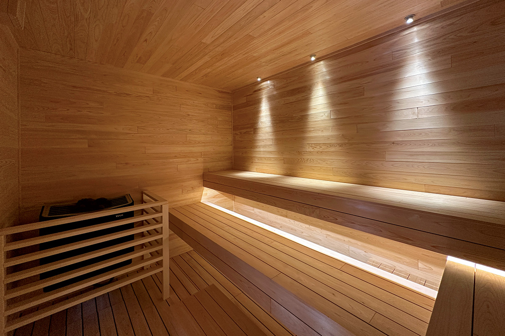
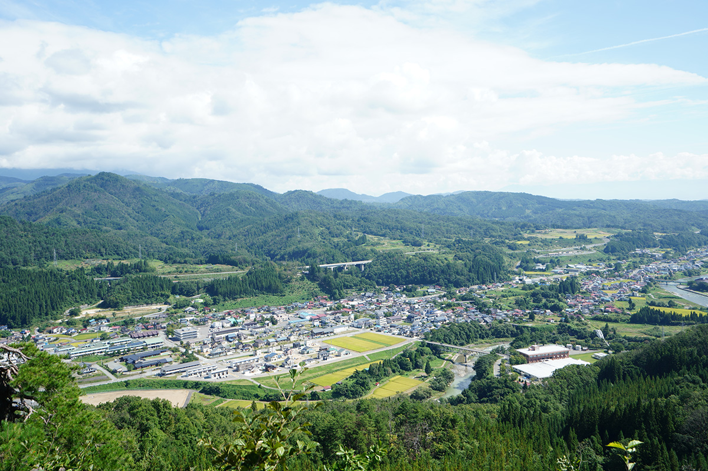
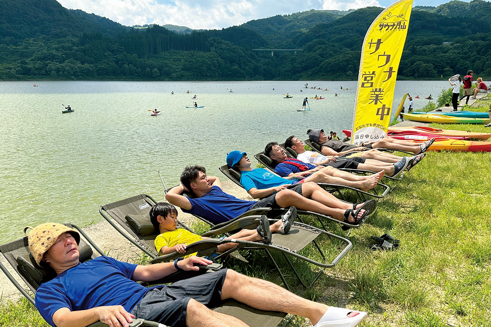
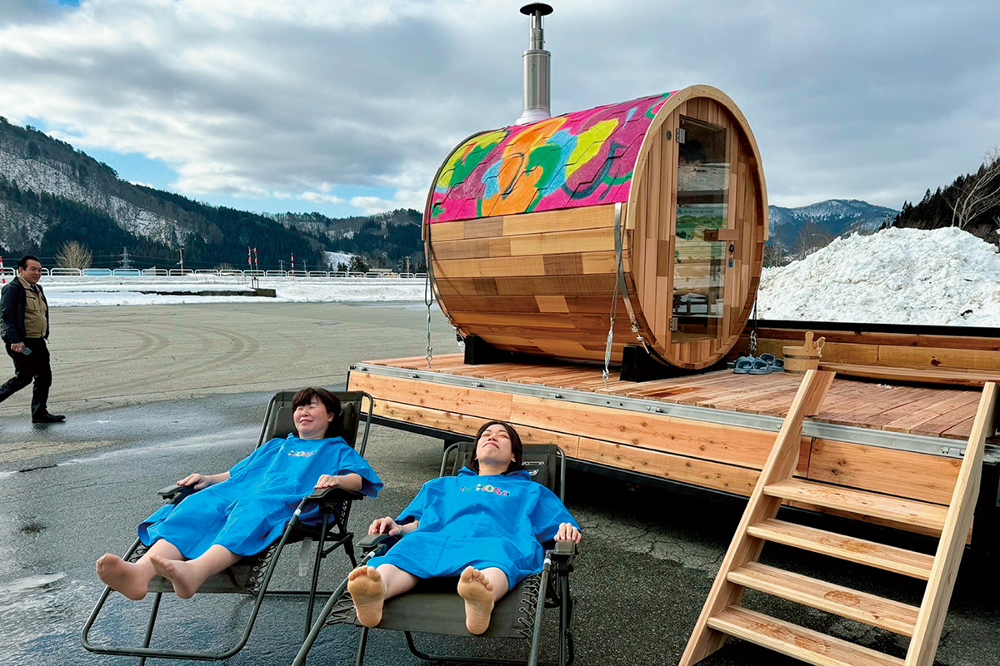

Префектура Ямагата · Нисикава · сауна
Нисикава: горный городок у Гассана, который сделал ставку на сауну

По всей Японии старые онсэны ищут новое лицо: кто через искусство, кто через архитектуру или кухню. Горный городок Нисикава в префектуре Ямагата выбрал сауну.
Идея
Сауна от мэра

Нисикава год за годом теряет жителей. Идея вернуть сюда людей через сауну принадлежит мэру, который вступил в должность в 2022 году. Опорой стала вода: талый снег с горы Гассан круглый год стекает в долину холодным и мягким.
На этой воде и перестроили обветшавшую купальню «Мидзусава онсэнкан». Её превратили в купальню с сауной, куда приезжают без ночлега. Ароматную воду на камни здесь поддаёт сам гость, купель наполнена талой снеговой водой, а для отдыха между заходами есть площадка на свежем воздухе, откуда видны звёзды. За такой сауной в Нисикаву приезжает много любителей пара из других мест.
Купальня
«Мидзусава онсэнкан»
Купальня удобна, чтобы заехать по дороге домой после похода в горы или катания на лыжах. Кроме финской сауны, где можно самому плеснуть воду на камни, есть и крытые горячие ванны. По соседству стоит придорожная станция «Нисикава», и там можно попробовать местное пиво.
Вход в 2025 году стоил 350 иен для взрослых и 100 иен для детей, сауна оплачивалась отдельно, ещё 500 иен.
«Мидзусава онсэнкан»
- Адрес
- префектура Ямагата, уезд Ниси-Мураяма, Нисикава, Мидзусава, 2304
- Телефон
- +81 237-74-4433
- Часы работы
- апрель–ноябрь 7:00–21:00, декабрь–март 8:00–21:00 (последний вход в 20:30); в пятницу и субботу круглый год до 22:00 (последний вход в 21:30)
- Выходные
- второй вторник месяца (если это праздник, день может меняться)
- Цены / Вход
- взрослые 350 иен, дети 100 иен, сауна плюс 500 иен
На природе
Сауна под открытым небом
Нисикава предлагает и сауны прямо на природе, среди гор и воды. Туристическая ассоциация «Гассан Асахи» устраивала мероприятия с трейлерной сауной: кузов прицепа переделали в парилку. Бывают и палаточные сауны, и бочки-сауны, похожие на маленькие деревянные домики.

